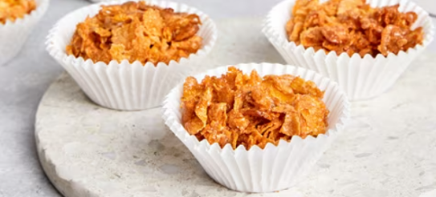

Recipes
Variety of ways to enjoy your VKellog's cereal !

Autumn Leaves
Type : Snack
DURATION
10 - 15 minutes
INGREDIENTS
1. A spoonful of butter (50g)
2.Sugar (25g)
3.Honey (100g)
4.Any VKellog’s® cereal
DIRECTIONS
1. Preheat oven to 150°C.
2. Line 24 hole patty pan with paper cases.
3. Melt butter, sugar and honey together in a saucepan until frothy.
4. Add VKellog's® Corn Flakes and mix well.
5. Working quickly spoon into paper patty cases.
6. Bake in a slow oven 150°C for 10 minutes.
7. Cool.
Only the Best Cornflakes
Get in touch with us
Got Questions ?
© 2024 VKellog's. ®, Registered trade marks. VKellog's Pty. Ltd. Authorized user. TM Trade Mark. VKellog's Pty. Ltd. is a member of the VKellog's Group.